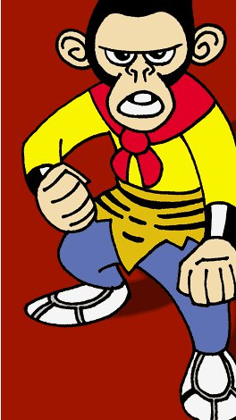
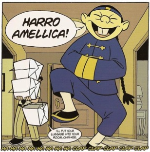
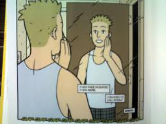
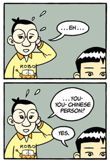

The author Gene Luen Yang
Genre
Theme
Topics
Book Cover
Notice that you can only see half of the main character.
He hasn’t figured out who he is. Yet!
He is holding a
transformer toy. The transformer changes from a robot into a truck.
The main character wants to transform
himself.
Parallel
Story Line
There are 3 story lines in the
graphic novel American Born
Chinese.
Their
stories are separate (parallel) for most of the book. Their stories
will converge (meet) at the end of the
book.
The Monkey King Jin Wang Chin-Kee
When he is a young boy Jin Wang says he wants to be "a transformer".
He wants to change who he is.
He tries to deny his Chinese heritage and culture.
Jin wants to assimilate and “fit in”.
From Chinese-American to 100% American.
He is searching for his identity.

The Monkey King
Chinese Fable
Monkey King is a deity (god)
The other gods make fun of him and he tries to change who he is.
He denies that he is a Monkey.
He will learn to accept his “monkey-ness” and find his identity.

Chin-Kee (Chinese Stereotype)
“Chink” is a derogatory name for Chinese.
He speaks funny. Pronounces L’s as R’s and R’s as L’s
He has a long ponytail.
He wears traditional Chinese clothing and shoes all the time.
The shape of his eyes is exaggerated (slanty eyes)
Notice that his luggage is take-out Chinese food containers.

Danny
The “All-American Boy”
He is tall, blonde, blue-eyed, handsome, athletic and popular.
Danny is everything that Jin Wang wants to become.

Wei-Chen
An immigrant
from Taiwan.
When Wei-Chen
meets Jin he shows Jin a present from his father, a transformer toy
that transforms to a robot monkey.
Jin Wang's best
freind.
Wei-Chen's
girlfriend is Suzy Nakamura.
He is actually
the Monkey King's son!

Tze-Yo-Tzuh
the creator of the universe and all of the deities.